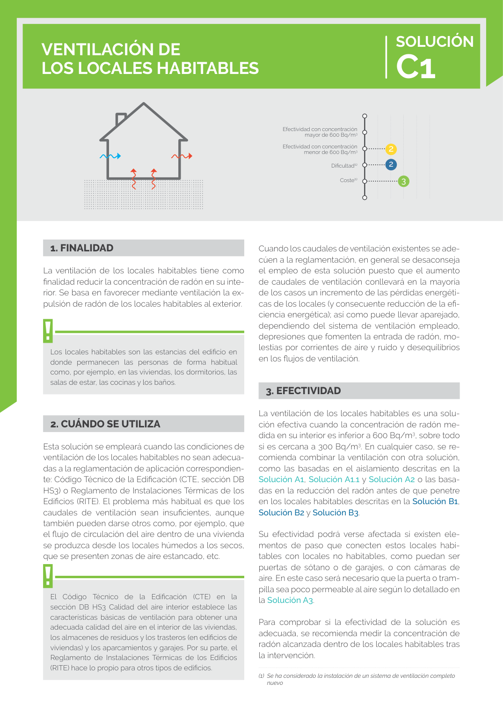

GUIA · 3. EFECTIVIDAD · versión sin-fecha · capa guia
Formatos: JSON compacto · Markdown · PDF fuente
Ámbito del documento · texto del ámbito · documento y tablas
Tipo: tablas, figuras · nivel 1 · sección estimada: 3. EFECTIVIDAD · padre:
3. EFECTIVIDAD La ventilación de los locales habitables es una solu ción efectiva cuando la concentración de radón me dida en su interior es inferior a 600 Bq/m3, sobre todo si es cercana a 300 Bq/m3. En cualquier caso, se re comienda combinar la ventilación con otra solución, como las basadas en el aislamiento descritas en la Solución A1, Solución A1.1 y Solución A2 o las basa das en la reducción del radón antes de que penetre en los locales habitables descritas en la Solución B1, Solución B2 y Solución B3. Su efectividad podrá verse afectada si existen ele mentos de paso que conecten estos locales habi tables con locales no habitables, como puedan ser puertas de sótano o de garajes, o con cámaras de aire. En este caso será necesario que la puerta o tram pilla sea poco permeable al aire según lo detallado en la Solución A3. Para comprobar si la efectividad de la solución es adecuada, se recomienda medir la concentración de radón alcanzada dentro de los locales habitables tras la intervención.

PDF fuente redistribuible: copia fiel enlazada en esta página (SHA256 verificado).